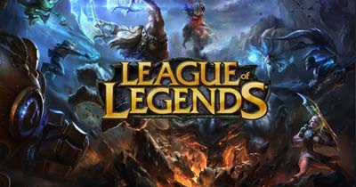
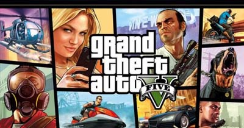
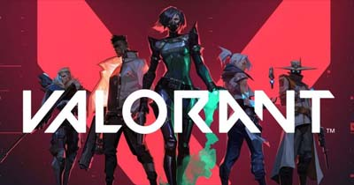
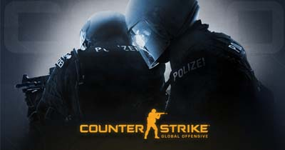
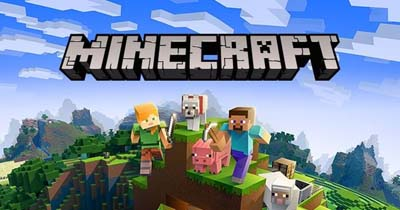

Selama setahun terakhir, Twitch terus menjadi platform masuk bagi para gamer yang ingin berbagi pengalaman bermain mereka dengan dunia. Dengan ribuan game yang dialirkan setiap hari, mungkin sulit untuk mengikuti apa yang populer di platform ini. Itulah mengapa kami menyusun daftar game teratas yang di-streaming di Twitch pada tahun 2022, sehingga Anda dapat terus mengikuti tren game terbaru dan ikut bersenang-senang. Banyak orang yang dulunya merasa game terpopuler adalah Dota 2, tapi dari banyaknya game yang distremingkan di twitch menjadikan sebuah jawabannya. Berikut adalah daftarnya:
1. League of Legends, 1,5 miliar jam.

Nah kalau yang ini adalah saingannya DOTA 2, yaitu League of Legends. Permainan MOBA yang sebenarnya punya banyak sekali penggemar di seluruh dunia ini punya banyak sekali pembuat konten yang aktif untuk streaming dan juga membuat momen video menarik didalam game League of Legends. Kurang lebih sih mirip dengan apa yang dihadirkan oleh komunitas kreator game MOBA lainnya. Namun memang perlu diakui, dengan jumlah pemain yang sangat banyak, jumlah penonton mereka merupakan ketiga tertinggi dari seluruh game yang ada.
2. Grand Theft Auto V, 1,4 miliar jam.

Siapa sih yang gatau game ini? Grand Theft Auto sudah sangat mendunia sehingga pasti semua gamer di dunia setidaknya tahu dengan game ini. Komunitas modding GTA yang sangat luas membuka ruang bagi para pembuat karya melalui Youtube untuk membuat konten-konten keren dan juga konten yang menghibur, sehingga banyak sekali orang yang berminat untuk menontonnya. Tak heran kalau video-video bertemakan Grand Theft Auto biasanya punya view jutaan dan pastinya sangat menghibur kalian yang nonton.
3. Valorant, 1,1 miliar jam.

Pendatang baru sejak bulan Oktober, tapi sudah mengisi posisi 5 besar! Benar, Kerusuhan Games memang serius mengembangkan game FPS dengan hasil yang memuaskan. Apalagi kalau bukan kehadiran Agent serta gaya bermain yang sangat berbeda. Meski sempat dihujani kritik, namun VALORANT terbukti laku di pasaran, bahkan banyak pemain CS:GO profesional yang memutuskan pindah ke VALORANT.
4. Counter-Strike: Global Offensive, 669,7 juta jam.

Game besutan Valve dengan sejarah lebih dari 18 tahun yaitu Counter-Strike. Seiring perkembangan dari seri 1.6 menjadi CS:GO, kini Valve juga memiliki masalah dalam kesejahteraan banyak pemain esportsnya, seperti sang pesaing baru.
5. Minecraft, 547,7 juta jam.

Memodifikasi? Nah ini dia surga tempat para modder berkumpul. Minecraft punya banyak sekali jenis permainan yang diciptakan oleh para Modder yang membuat game ini menjadi masih sangat ramai dimainkan. Bayangkan kamu sampai bisa bermain Pokemon melalui Minecraft, dan masih banyak game lainnya yang bisa kamu mainkan melalui mod dari para modder game Minecraft. Walaupun tidak perlu ditanyakan lagi memang game Minecraft punya daya tarik tersendiri bagi para pemain setianya. Sehingga sangat wajar untuk game ini yang sangat sukses ini cukup terkenal di twitch.
Saat industri game terus tumbuh dan berkembang, begitu pula dunia streaming Twitch. Dengan begitu banyak game luar biasa yang dirilis setiap tahun, sulit untuk memprediksi game mana yang akan menjadi hit terbesar di platform ini. Namun, kami yakin game-game dalam daftar ini akan terus hadir di Twitch pada tahun 2022 dan seterusnya. Baik Anda penggemar game tembak-tembakan cepat, RPG imersif, atau battle royale yang mengasyikkan, selalu ada sesuatu untuk semua orang di dunia game Twitch.